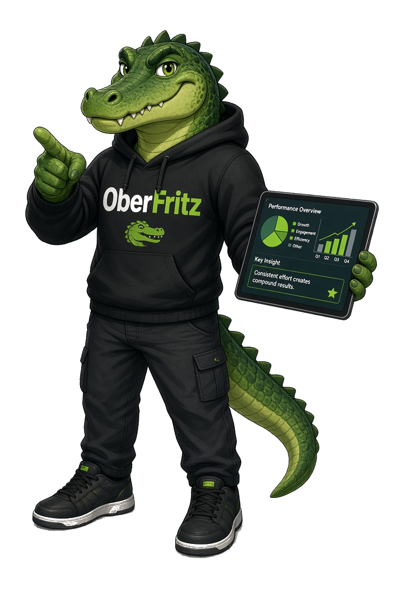

Informação espalhada
Parte está no Excel, parte no WhatsApp, parte na cabeça de alguém. Ninguém vê o negócio inteiro.
Software · Automação · Infraestrutura · Dados
Sistemas sob medida e automação para a sua empresa trabalhar com menos retrabalho e mais controle.
01 · o que fazemos
Criamos sistemas sob medida para pequenas empresas que querem automatizar tarefas, juntar as informações num só lugar e ter controle do negócio.
Começamos por um problema real e crescemos junto com a sua empresa, do primeiro processo automatizado ao sistema completo.

02 · diagnóstico
Se algum deles parece com o seu dia a dia, podemos resolver.
Parte está no Excel, parte no WhatsApp, parte na cabeça de alguém. Ninguém vê o negócio inteiro.
Sua equipe gasta horas copiando dados e repetindo tarefas que o sistema faria sozinho.
ERP, CRM, WhatsApp e planilhas funcionam separados, e a equipe faz a ponte na mão.
Sem números confiáveis, você decide no palpite e não sabe onde está o problema.
O que funcionava com equipe pequena hoje gera erro, atraso e dependência de uma pessoa só.
Comprar mais um software não resolve. Primeiro entendemos como a sua empresa trabalha, depois construímos a solução certa.
03 · entregas
Seis serviços que se completam.
Sistemas e painéis feitos para o seu processo, não de modelo pronto.
web · saas · painéisServidores e ambientes online, seguros e que não dependem de uma pessoa só.
cloud · docker · devopsControle de quem acessa, backup testado e monitoramento para evitar problemas.
acessos · backup · logsPainéis com os números do seu negócio, sempre atualizados, sem planilha.
bi · relatórios · kpisTarefas repetitivas feitas sozinhas, com ERP, CRM e WhatsApp conectados.
integrações · ia · rotinasConectamos sistemas diferentes para trocarem informação automaticamente.
rest · webhooks · integraçãoarraste para girar
04 · diferencial
Sistema feito sem entender o seu processo vira mais uma ferramenta que ninguém usa.
Por isso começamos pelo diagnóstico e só depois construímos. Você recebe a operação funcionando.
Entregamos controle e tempo de volta para a sua equipe.
05 · método
Quatro etapas, com você decidindo em cada uma.
Entendemos seu processo e achamos onde você perde tempo e dinheiro. O diagnóstico é seu, mesmo que não siga com o projeto.
Fazemos primeiro a parte que resolve o maior problema. Você testa cedo e ajusta o rumo.
Construímos o restante em etapas curtas, com acompanhamento toda semana.
Sistema no ar, equipe treinada e tudo documentado. Depois, suporte e melhorias conforme o negócio muda.
Receba um diagnóstico dos problemas da sua empresa e um plano do que automatizar primeiro.

06 · projetos
Clique em qualquer um e veja funcionando, sem sair do site.
 ao vivo
ao vivo
Landing page com produto em 3D que acompanha a rolagem, apresentação dos sabores e pedido direto pelo WhatsApp.
 ao vivo
ao vivo
Site institucional com comparativo de economia, rotas populares, FAQ e formulário de cotação que envia o pedido direto pelo WhatsApp.
 ao vivo
ao vivo
Catálogo de rações, petiscos e acessórios por tipo de animal, carrinho no site e pedido finalizado direto pelo WhatsApp, com entrega ou retirada.
07 · clientes
Relatos de quem já trabalhou com a gente.
A gente vivia de planilha e memória. Hoje abro um painel e sei exatamente onde está cada ordem de produção.
O diagnóstico já valeu por si só. Descobrimos que o gargalo não era onde a gente achava que era.
Integraram o ERP com o CRM e o WhatsApp em poucas semanas. Trabalho de digitação que ocupava duas pessoas simplesmente sumiu.
Explicam sem enrolação. Entendi o que estava sendo construído em cada etapa, mesmo não sendo da área técnica.
A gente vivia de planilha e memória. Hoje abro um painel e sei exatamente onde está cada ordem de produção.
O diagnóstico já valeu por si só. Descobrimos que o gargalo não era onde a gente achava que era.
Integraram o ERP com o CRM e o WhatsApp em poucas semanas. Trabalho de digitação que ocupava duas pessoas simplesmente sumiu.
Explicam sem enrolação. Entendi o que estava sendo construído em cada etapa, mesmo não sendo da área técnica.
Subiram tudo em container e o deploy virou rotina. Parou de existir aquele medo de mexer no sistema.
O relatório que a equipe montava em dois dias hoje sai sozinho toda segunda de manhã.
Começamos pequeno, com um MVP. Um ano depois é o sistema que a empresa inteira usa.
Suporte rápido e direto. Quando algo trava, a resposta vem com solução, não com desculpa.
Subiram tudo em container e o deploy virou rotina. Parou de existir aquele medo de mexer no sistema.
O relatório que a equipe montava em dois dias hoje sai sozinho toda segunda de manhã.
Começamos pequeno, com um MVP. Um ano depois é o sistema que a empresa inteira usa.
Suporte rápido e direto. Quando algo trava, a resposta vem com solução, não com desculpa.